Vertical extension
Independent additions can increase usable space without transferring new structural demand into the original frame.
Undergraduate Thesis · CUET · 2025
An independently supported seven-story composite-steel extension designed above an existing three-story RCC building — developed around structural independence, seismic performance, and uninterrupted operation.
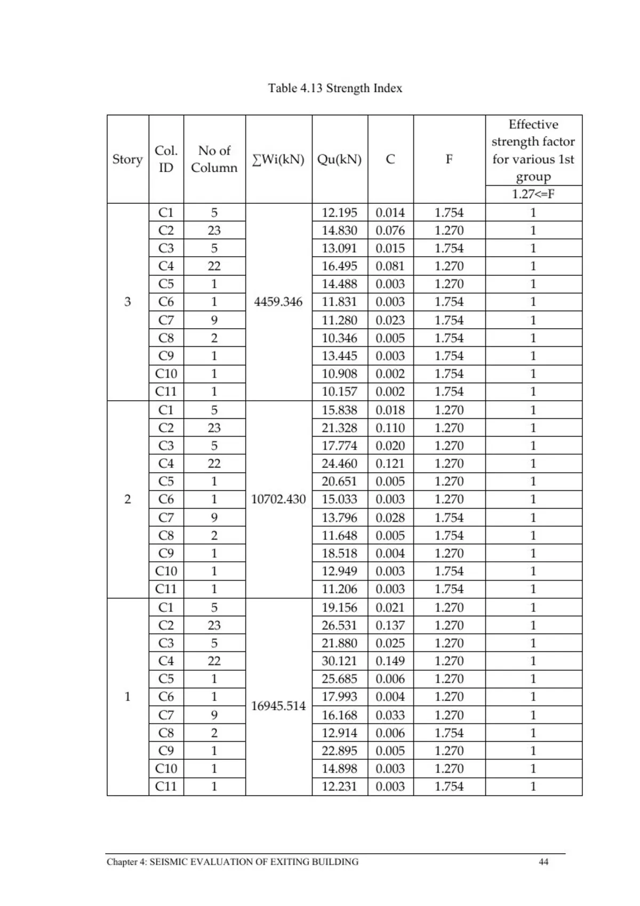
The project addresses academic space shortage without demolishing or loading the existing building. The proposed solution is a structurally independent seven-story composite structure with its own foundation, positioned around and above the existing three-story RCC facility.
The thesis uses ETABS 18 for structural analysis, AutoCAD for drawings, and IDEA StatiCa for connection design, following BNBC 2020 and LRFD methodology.
Chapter One
The constraint is not simply lack of space. It is the need to add space while an existing academic building remains operational.
The existing Civil Engineering building at CUET is a three-story structure constructed in 1968. Growing academic demand creates a need for additional floor area, while demolition, reconstruction, and disruptive structural intervention are incompatible with continuous academic use.
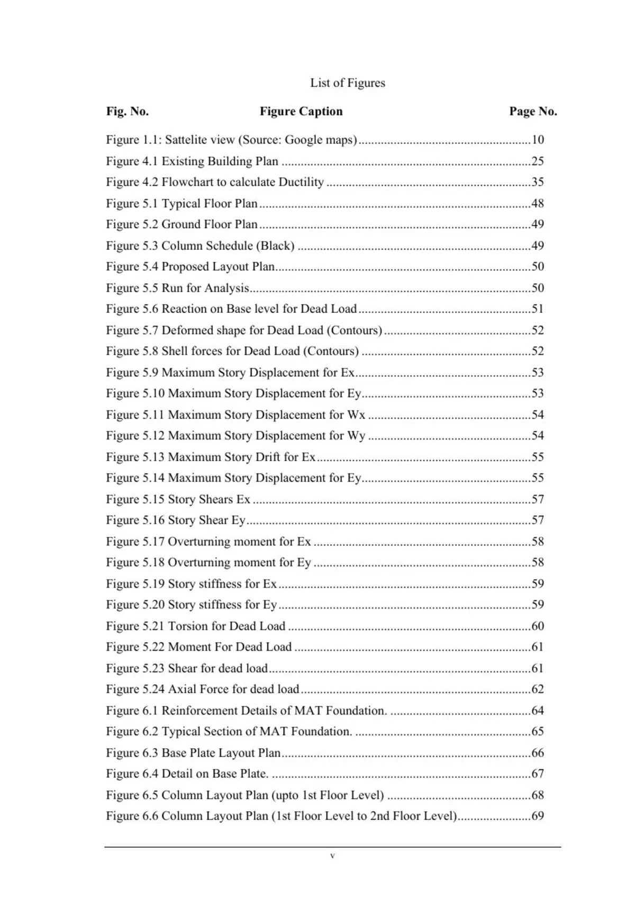
Chapter 1 · source pageChapter Two
Vertical extension, composite steel systems, seismic performance, and the local material context establish the basis for the selected strategy.
Independent additions can increase usable space without transferring new structural demand into the original frame.
Steel framing with concrete floor systems balances weight, ductility, speed of construction, and adaptability.
BNBC 2020 and Bangladesh's construction environment frame the design requirements.
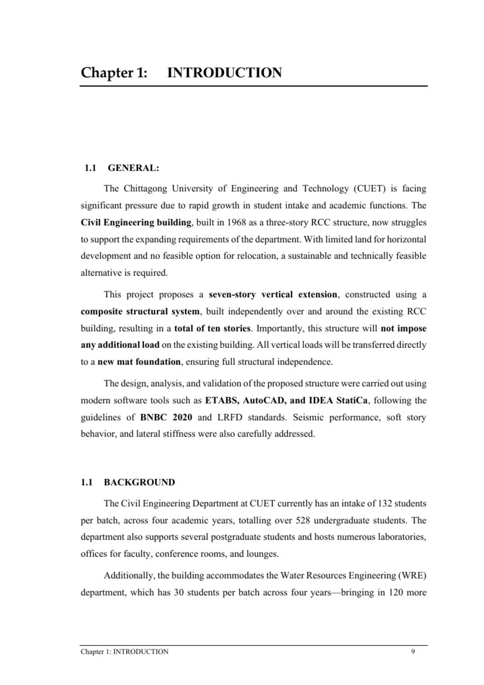
Chapter 2 · source pageChapter Three
A staged workflow turns the existing-building constraint into an independently founded composite structural system.
Space shortage + operational continuity.
Composite steel selected for independence and lower superstructure weight.
ETABS 18 analysis with code-based loading and 31 combinations.
Drift, displacement, torsion, stiffness, P-Delta, and seismic checks.
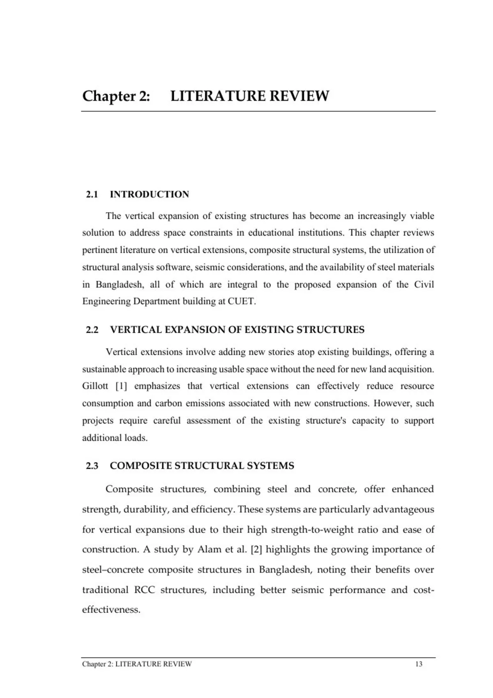
Chapter Four
The existing building is evaluated as part of the site-wide seismic context before the new independent structure is introduced.
The evaluation establishes the seismic demand and capacity context needed for the proposed extension. The thesis reports a seismic demand value of Iso = 0.234, with the evaluated capacity exceeding demand.
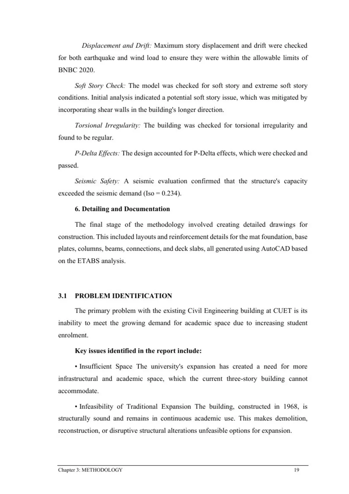
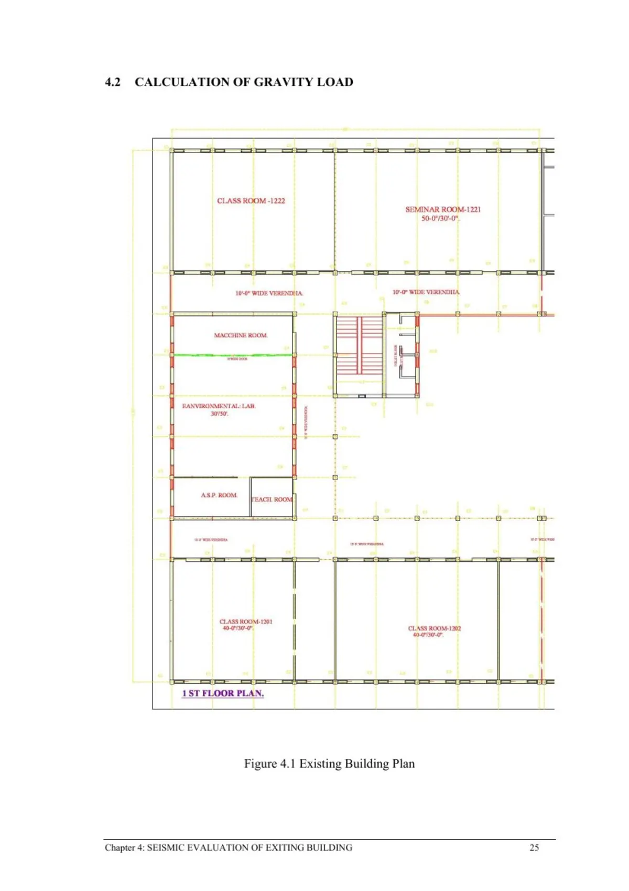
Chapter Five
The core engineering chapter: structural system, loads, modelling, lateral response, member design, and the intervention that resolves the soft-story issue.
Critical design move
Initial analysis indicated a potential soft-story condition in the longer direction. Shear walls were introduced to increase lateral stiffness and remove the irregularity.
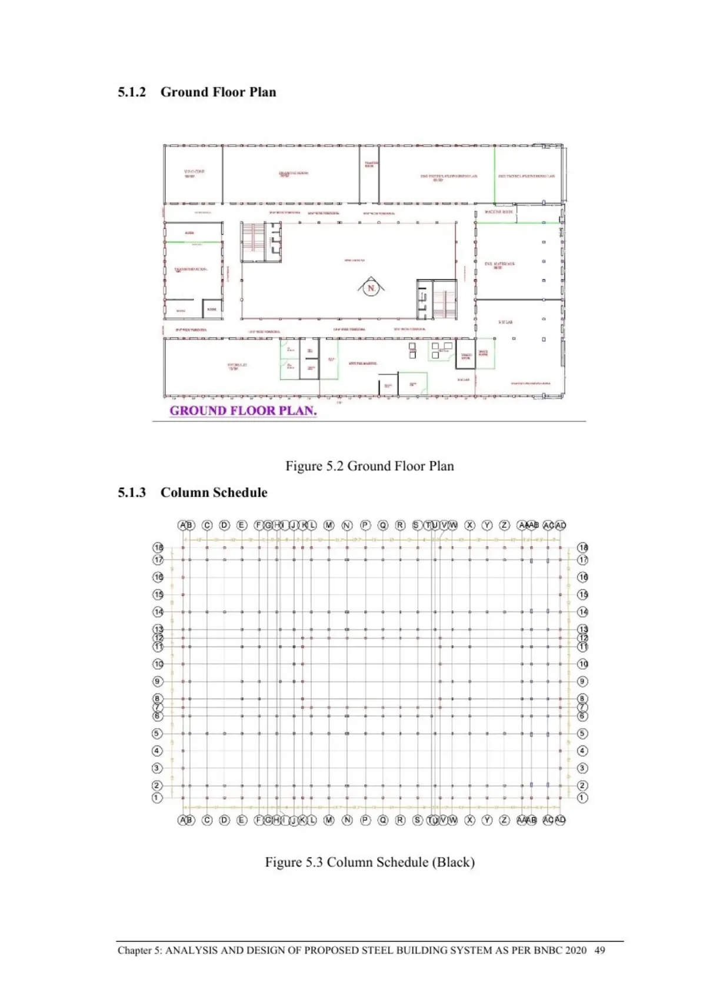
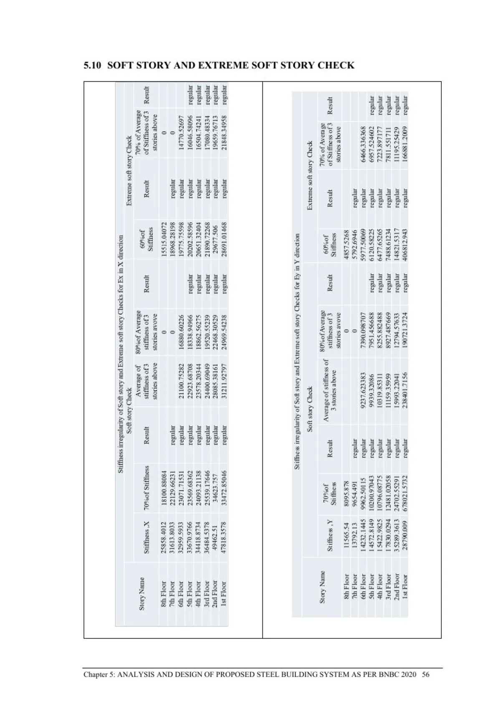
Chapter Six
From global analysis to construction-ready structural documentation.
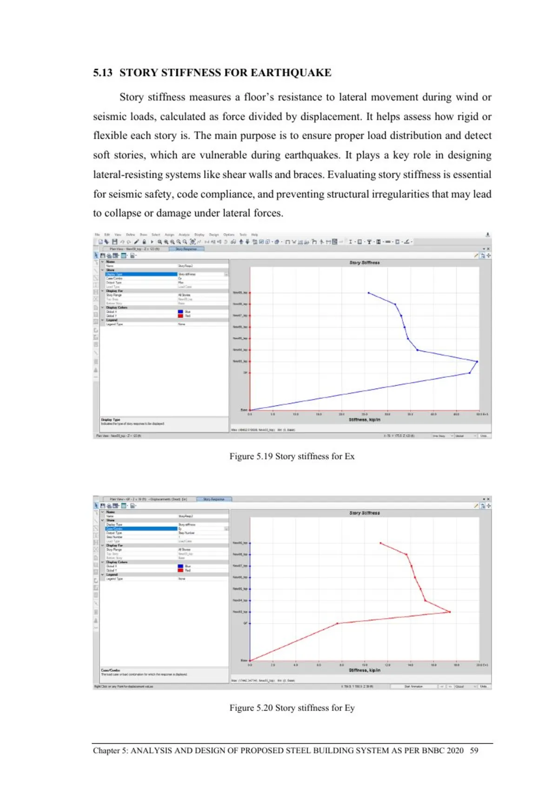
FOUNDATION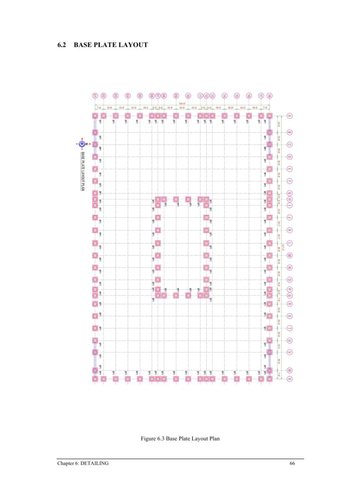
FRAMING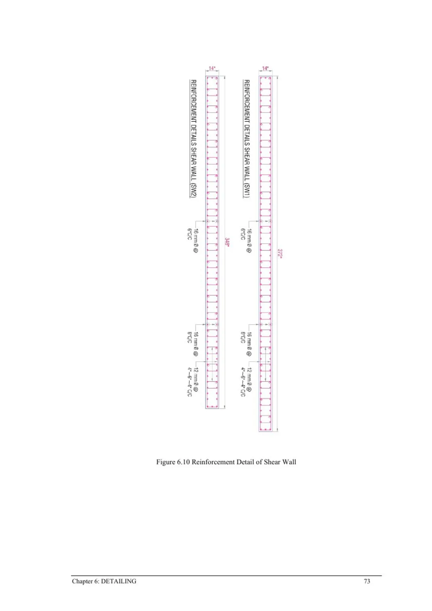
CONNECTIONS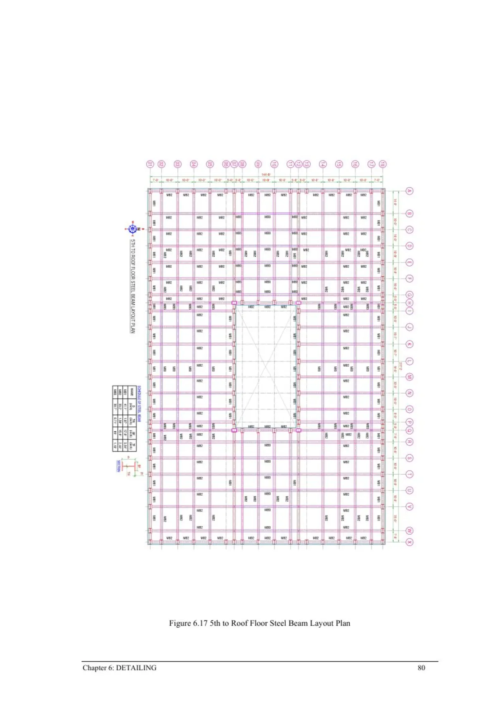
DECK / SLABChapter Seven
The final model is checked from multiple angles: deformation, drift, torsion, stiffness irregularity, P-Delta, and seismic safety.
What the numbers mean
The reported maximum seismic displacement is well below the allowable limit. Story drift remains within the code-defined limits, while torsion, stiffness irregularity, and P-Delta checks pass.
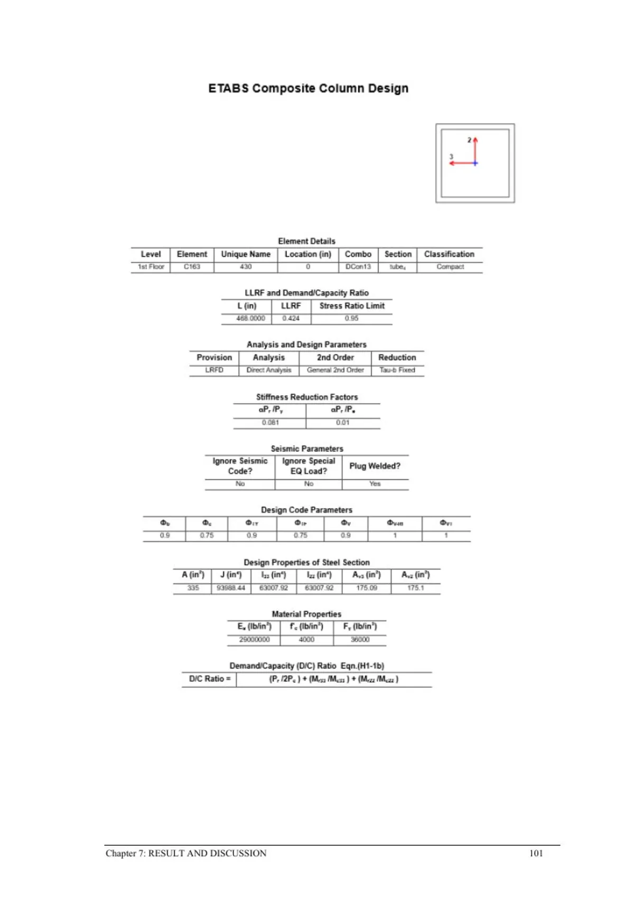
Chapter Eight
A practical framework for adding institutional floor area where demolition is undesirable and structural independence is essential.
Independent composite-steel vertical expansion in a constrained institutional setting.
Foundation interference, construction access, working-hour restrictions, logistics, and cost.
Alternative framing, deep foundations, lighter floor systems, high-performance materials, and nonlinear/performance-based seismic analysis.
Every substantive thesis page is available below. Embedded visual assets extracted from the PDF are also indexed automatically.